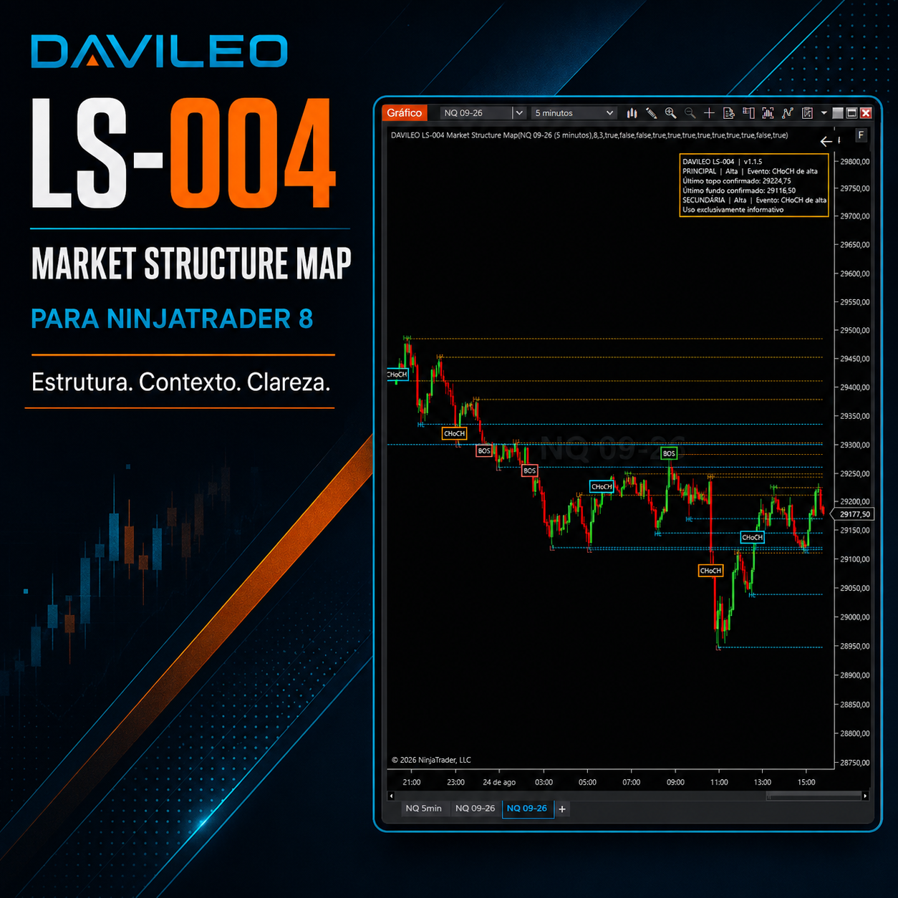
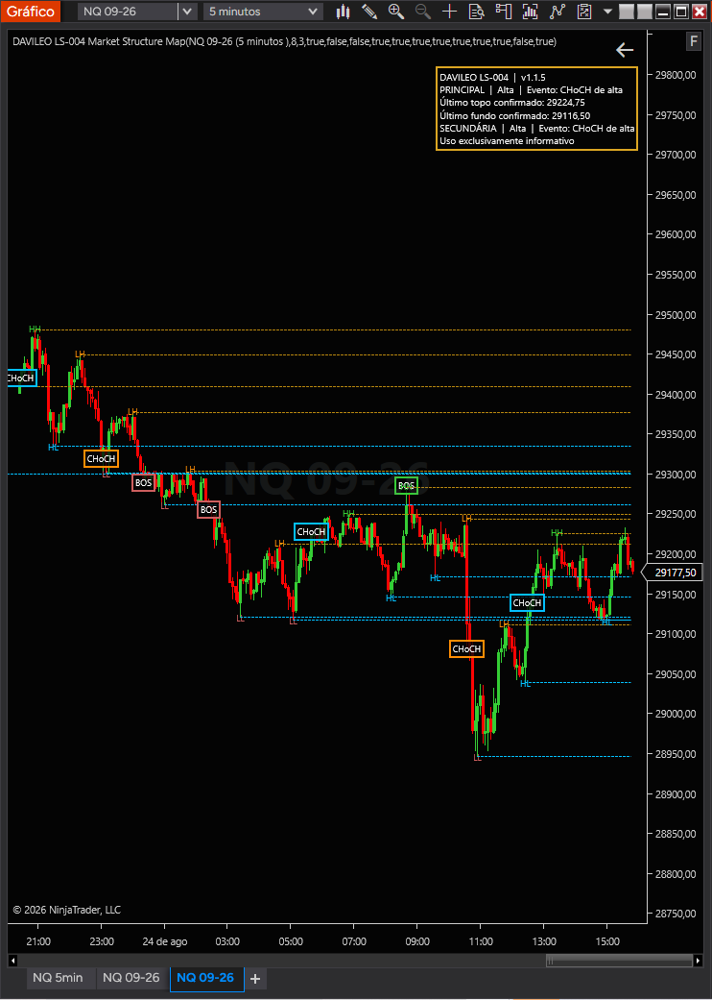

LS-004 Market Structure Map
Estrutura de mercado, com hierarquia e contexto. Pivôs confirmados, BOS e CHoCH em uma leitura visual limpa, configurável e exclusivamente informativa para o NinjaTrader 8.
Versão 1.1.5 · NinjaTrader 8 Desktop · Manual e Guia Rápido incluídos · Licença vitalícia da versão adquirida

Leia a estrutura confirmada do mercado
O DAVILEO LS-004 Market Structure Map organiza a leitura estrutural do preço diretamente no gráfico. O indicador identifica pivôs confirmados, classifica HH, HL, LH e LL, acompanha estruturas principal e secundária e registra eventos de BOS e CHoCH.
A configuração padrão prioriza clareza: a estrutura principal permanece em evidência, a secundária pode ser ativada quando necessária e as linhas e marcações de pregões anteriores podem ser exibidas ou ocultadas de forma independente.

Uma linguagem visual para a estrutura
O nível de detalhe que faz sentido para o seu gráfico
As opções de exibição podem ser combinadas sem alterar o motor estrutural.
Validado em NQ, MNQ, ES e MES nos gráficos de 5 minutos e 30 segundos. Os resultados visuais podem variar conforme ativo, liquidez, dados, histórico, período gráfico e configuração.
Pacote completo e documentado
A compra inclui o indicador DAVILEO LS-004 Market Structure Map v1.1.5, o Manual do Usuário e o Guia Rápido de Instalação.
O licenciamento utiliza o sistema oficial de Vendor Licensing do NinjaTrader e é vinculado ao e-mail autorizado para a licença adquirida.
R$ 297,00
Compra única. Inclui o indicador, arquivo de instalação, Manual do Usuário e Guia Rápido.
Comprar agora Documentação e suporte →Compra única, regras claras
A licença da versão adquirida é vitalícia, vinculada ao comprador e sem limitação de computador. É proibido compartilhar, distribuir, copiar ou revender o indicador.
A licença permanece válida enquanto essa versão for compatível e aceita pelo NinjaTrader 8. Futuras versões com novas funções não estão incluídas gratuitamente.
Informações antes da aquisição
O suporte cobre instalação, ativação e utilização dos recursos documentados da versão adquirida.
Reembolso disponível em até 7 dias, conforme as condições da plataforma de pagamento.
Antes de adquirir
O que são HH, HL, LH e LL?
São classificações de topos e fundos confirmados: topo mais alto, fundo mais alto, topo mais baixo e fundo mais baixo. O LS-004 organiza essas referências diretamente no gráfico.
O que significam BOS e CHoCH?
BOS registra um rompimento coerente com a estrutura acompanhada. CHoCH indica mudança no comportamento estrutural observado. Nenhum deles constitui sinal de operação.
As marcações aparecem antes da confirmação?
Não. O LS-004 trabalha com pivôs e eventos estruturais confirmados, conforme seu motor de cálculo no fechamento da barra.
O indicador executa ou gerencia ordens?
Não. O LS-004 é exclusivamente informativo e não envia nem gerencia ordens.
A licença possui mensalidade ou limite de computadores?
Não. A licença é vitalícia para a versão adquirida, sem mensalidade ou limitação de computador, e vinculada ao comprador.
Novas funções futuras estão incluídas?
Futuras versões com novas funções ou recursos adicionais não estão incluídas gratuitamente.
Requisitos
NinjaTrader 8 Desktop — 64 bits, conexão de dados compatível, histórico intradiário suficiente e conexão com a internet para validação da licença.
Natureza do produto
O LS-004 é uma ferramenta exclusivamente informativa de análise de mercado. Não fornece sinais, aconselhamento financeiro, garantia de resultados ou recomendação de compra e venda. A negociação de futuros envolve riscos substanciais e pode não ser adequada a todos os investidores. O usuário permanece integralmente responsável por suas decisões e pelo gerenciamento de risco.